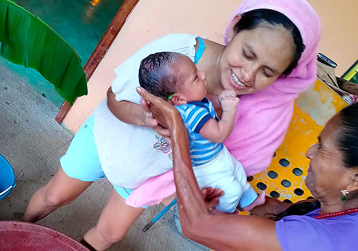
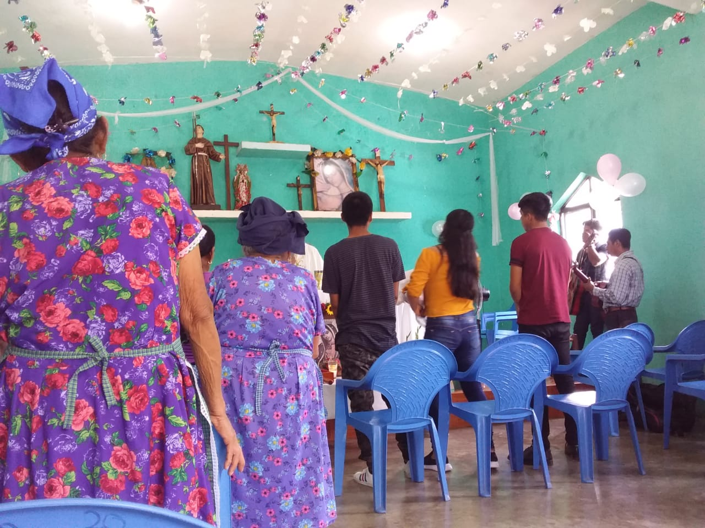

Narrativas sobre nacimiento
Retención placentaria. Cuando la mujer está en el momento del parto, nace él bebe y queda retenida la placenta lo que se debe de hacer es hervir epazote y tomarlo como te...
Ritual del baño Tlaahaltilistl. Veracruz, Xochik. Aja si pero eso es algo de mucho cuidado tu como enferma (parturienta) te vas a lavar la cara te vas a bañar todo porque tu no saldrás afuera no te tiene que llegar el sol...

Ritual de baño

Audios
- Spot - Baño del recién nacido en SLP 01
- Spot - Baño del recién nacido en SLP 02
- Spot - Baño del recién nacido en SLP 03
- Spot - Baño del recién nacido en Veracruz 01
- Spot - Baño del recién nacido en Veracruz 02
- Spot - Baño del recién nacido en Veracruz 03
- Spot - Baño del recién nacido en Hidalgo 01
- Spot - Baño del recién nacido en Hidalgo 02
- Spot - Baño del recién nacido en Hidalgo 03

Narrativas sobre embarazo

Narrativas sobre nacimiento

Narrativas sobre crianza

Nuestras parteras